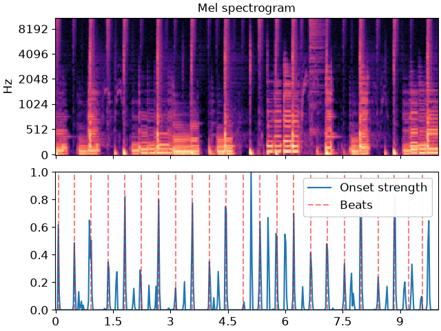

librosa.beat.beat_track
- librosa.beat.beat_track(*, y=None, sr=22050, onset_envelope=None, hop_length=512, start_bpm=120.0, tightness=100, trim=True, bpm=None, prior=None, units='frames', sparse=True)[source]
Dynamic programming beat tracker.
Beats are detected in three stages, following the method of [1]:
Measure onset strength
Estimate tempo from onset correlation
Pick peaks in onset strength approximately consistent with estimated tempo
- Parameters:
- ynp.ndarray [shape=(…, n)] or None
audio time series
- srnumber > 0 [scalar]
sampling rate of
y- onset_envelopenp.ndarray [shape=(…, m)] or None
(optional) pre-computed onset strength envelope.
- hop_lengthint > 0 [scalar]
number of audio samples between successive
onset_envelopevalues- start_bpmfloat > 0 [scalar]
initial guess for the tempo estimator (in beats per minute)
- tightnessfloat [scalar]
tightness of beat distribution around tempo
- trimbool [scalar]
trim leading/trailing beats with weak onsets
- bpmfloat [scalar] or np.ndarray [shape=(…)]
(optional) If provided, use
bpmas the tempo instead of estimating it fromonsets.If multichannel, tempo estimates can be provided for all channels.
Tempo estimates may also be time-varying, in which case the shape of
bpmshould match that ofonset_envelope, i.e., one estimate provided for each frame.- priorscipy.stats.rv_continuous [optional]
An optional prior distribution over tempo. If provided,
start_bpmwill be ignored.- units{‘frames’, ‘samples’, ‘time’}
The units to encode detected beat events in. By default, ‘frames’ are used.
- sparsebool
If
True(default), detections are returned as an array of frames, samples, or time indices (as specified byunits=).If
False, detections are encoded as a dense boolean array wherebeats[..., n]is true if there’s a beat at frame indexn.Note
multi-channel input is only supported when
sparse=False.
- Returns:
- tempofloat [scalar, non-negative] or np.ndarray
estimated global tempo (in beats per minute)
If multi-channel and
bpmis not provided, a separate tempo will be returned for each channel- beatsnp.ndarray
estimated beat event locations.
If sparse=True (default), beat locations are given in the specified units (default is frame indices).
If sparse=False (required for multichannel input), beat events are indicated by a boolean for each frame.
Note
If no onset strength could be detected, beat_tracker estimates 0 BPM and returns an empty list.
- Raises:
- ParameterError
if neither
ynoronset_envelopeare provided, or ifunitsis not one of ‘frames’, ‘samples’, or ‘time’
See also
Examples
Track beats using time series input
>>> y, sr = librosa.load(librosa.ex('choice'), duration=10)
>>> tempo, beats = librosa.beat.beat_track(y=y, sr=sr) >>> tempo 135.99917763157896
Print the frames corresponding to beats
>>> beats array([ 3, 21, 40, 59, 78, 96, 116, 135, 154, 173, 192, 211, 230, 249, 268, 287, 306, 325, 344, 363])
Or print them as timestamps
>>> librosa.frames_to_time(beats, sr=sr) array([0.07 , 0.488, 0.929, 1.37 , 1.811, 2.229, 2.694, 3.135, 3.576, 4.017, 4.458, 4.899, 5.341, 5.782, 6.223, 6.664, 7.105, 7.546, 7.988, 8.429])
Output beat detections as a boolean array instead of frame indices >>> tempo, beats_dense = librosa.beat.beat_track(y=y, sr=sr, sparse=False) >>> beats_dense array([False, False, False, True, False, False, False, False,
False, False, False, False, False, False, False, False, False, False, False, False, …, False, False, True, False, False, False, False, False, False, False, False, False, False, False, False, False, False, False, False, False])
Track beats using a pre-computed onset envelope
>>> onset_env = librosa.onset.onset_strength(y=y, sr=sr, ... aggregate=np.median) >>> tempo, beats = librosa.beat.beat_track(onset_envelope=onset_env, ... sr=sr) >>> tempo 135.99917763157896 >>> beats array([ 3, 21, 40, 59, 78, 96, 116, 135, 154, 173, 192, 211, 230, 249, 268, 287, 306, 325, 344, 363])
Plot the beat events against the onset strength envelope
>>> import matplotlib.pyplot as plt >>> hop_length = 512 >>> fig, ax = plt.subplots(nrows=2, sharex=True) >>> times = librosa.times_like(onset_env, sr=sr, hop_length=hop_length) >>> M = librosa.feature.melspectrogram(y=y, sr=sr, hop_length=hop_length) >>> librosa.display.specshow(librosa.power_to_db(M, ref=np.max), ... y_axis='mel', x_axis='time', hop_length=hop_length, ... ax=ax[0]) >>> ax[0].label_outer() >>> ax[0].set(title='Mel spectrogram') >>> ax[1].plot(times, librosa.util.normalize(onset_env), ... label='Onset strength') >>> ax[1].vlines(times[beats], 0, 1, alpha=0.5, color='r', ... linestyle='--', label='Beats') >>> ax[1].legend()
